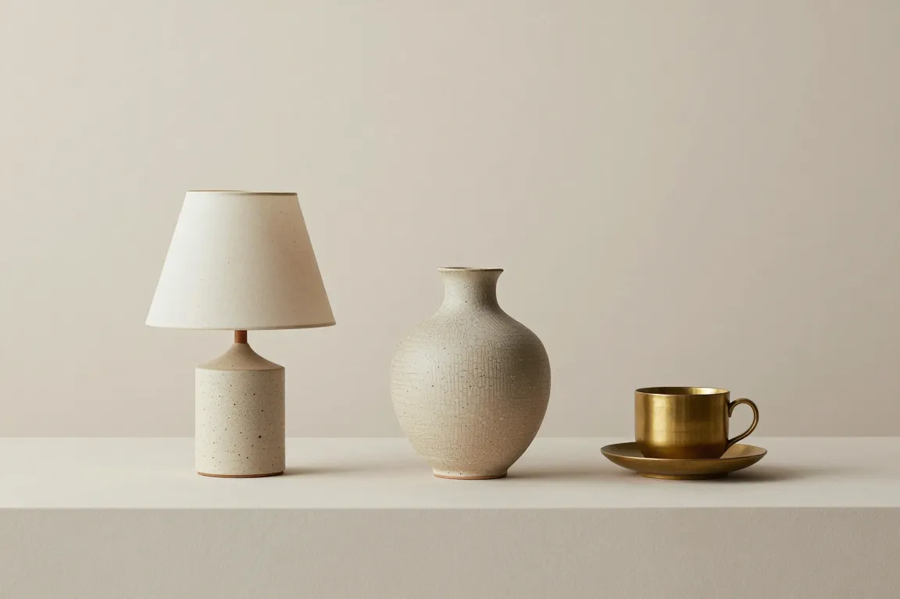

Den håndlagde gjenstanden i det stille hjemmet: steingods med spettet glasur, massiv eik med oljet overflate, vasket lin og ulakkert messing, laget i små serier og latt stå med håndens spor.

Kjerneidé
En god gjenstand er laget av et menneske av ett ekte materiale, og den vinner verdi ved bruk: sporene, tonen og den sakte slitasjen er ornamentet.
Designprinsipper
Bruk et massivt materiale, ikke finér: eik på 25 til 50 mm, steingods med en vegg på 5 til 8 mm.
Overflatebehandle med olje, såpe, voks eller en matt glasur; hold glansen under 15 GU.
La hver gjenstand ha ett spor etter lageren: en dreierille, et høvelspor eller en hammerfasett.
Lag hver form av en enkel figur med litt ujevne kanter og en myk radius på 3 til 10 mm.
Hold deg til en palett av 4 eller 5 varme nøytrale: havre, sand, leire, bein og en myk sort.
Bruk messing uten lakk, slik at den mørkner med hånden og årene.
Lag i serier på 1 til 100 stykker og signer bunnen eller baksiden.